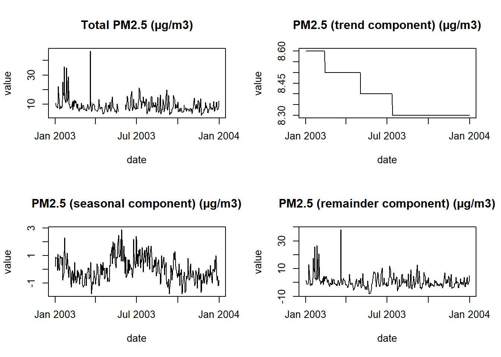
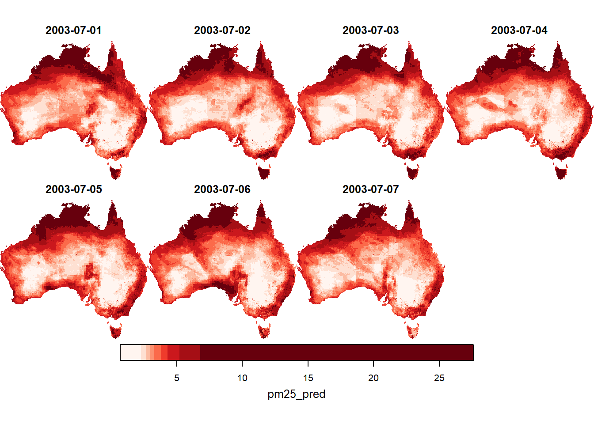

6 User guide
6.1 Demo R code
6.1.1 Read metadata with ncdf4
To read metadata from the NetCDF, use the ncdf4 package.
library(ncdf4)
# select file
infile <- "Bushfire_specific_PM25_Aus_2001_2020_v1_3/data_derived/bushfiresmoke_v1_3_2003_compressed_20231130_7.nc"
## read netCDF
nc <- ncdf4::nc_open(infile)
# nc # show summary overview
## show variable names
names(nc$var)## [1] "albers_conical_equal_area" "prediction_out_range"
## [3] "predictor_out_range" "active_fires_10000"
## [5] "active_fires_100000" "active_fires_25000"
## [7] "active_fires_50000" "active_fires_500000"
## [9] "dust_cams_p50" "dust_cams_p75"
## [11] "dust_cams_p95" "dust_merra_2_p50"
## [13] "dust_merra_2_p75" "dust_merra_2_p95"
## [15] "extrapolated" "whs_12degreeC"
## [17] "whs_15degreeC" "whs_18degreeC"
## [19] "smoke_p95_v1_3" "trimmed_smoke_2SD_v1_3"
## [21] "pm25_pred" "remainder"
## [23] "seasonal" "trend"## [1] "CDI" "Conventions" "history" "NCO" "CDO"
## [6] "source" "references" "comment"6.1.2 Read data with terra
The terra package can read and manipulate both raster data (as provided here) and vector data. See full documentation for more.
library(terra)
# select file
infile <- "Bushfire_specific_PM25_Aus_2001_2020_v1_3/data_derived/bushfiresmoke_v1_3_2003_compressed_20231130_7.nc"
# Read NetCDF
sdset <- sds(infile)
sdset # show summary of NetCDF contents## class : SpatRasterDataset
## subdatasets : 23
## dimensions : 769, 804 (nrow, ncol)
## nlyr : 365, 365, 365, 365, 365, 365, 365, 365, 365
## resolution : 5000, 5000 (x, y)
## extent : -1892186, 2127815, -4851639, -1006640 (xmin, xmax, ymin, ymax)
## coord. ref. : GDA94 / Australian Albers (EPSG:3577)
## source(s) : bushfiresmoke_v1_3_2003_compressed_20231130_7.nc
## names : prediction_out_range, predictor_out_range, active_fires_10000, active_fires_100000, active_fires_25000, active_fires_50000, ...## [1] "prediction_out_range" "predictor_out_range" "active_fires_10000"
## [4] "active_fires_100000" "active_fires_25000" "active_fires_50000"
## [7] "active_fires_500000" "dust_cams_p50" "dust_cams_p75"
## [10] "dust_cams_p95" "dust_merra_2_p50" "dust_merra_2_p75"
## [13] "dust_merra_2_p95" "extrapolated" "whs_12degreeC"
## [16] "whs_15degreeC" "whs_18degreeC" "smoke_p95_v1_3"
## [19] "trimmed_smoke_2SD_v1_3" "pm25_pred" "remainder"
## [22] "seasonal" "trend"# Look at specific layer/variable raster
r <- sdset[["pm25_pred"]]
# time(r) # time component of raster
# values(r) # values of raster as a matrix
r # show summary of raster## class : SpatRaster
## size : 769, 804, 365 (nrow, ncol, nlyr)
## resolution : 5000, 5000 (x, y)
## extent : -1892186, 2127815, -4851639, -1006640 (xmin, xmax, ymin, ymax)
## coord. ref. : GDA94 / Australian Albers (EPSG:3577)
## source : bushfiresmoke_v1_3_2003_compressed_20231130_7.nc:pm25_pred
## varname : pm25_pred
## names : pm25_pred_1, pm25_pred_2, pm25_pred_3, pm25_pred_4, pm25_pred_5, pm25_pred_6, ...
## time (days) : 2003-01-01 to 2003-12-31 (365 steps)Plots and further geospatial processing may be performed with terra:
library(data.table)
# Read STL components and extract at a location
# set location
v <- vect(matrix(c(150.994659, -33.921600), nrow = 1), crs = "epsg:4326")
lyrs <- c("trend", "seasonal", "remainder", "pm25_pred")
# extract timeseries for each variable
extract_ts <- lapply(lyrs, function(x) {
r <- sdset[[x]] # read raster variable
e <- extract(r, project(v, r)) # extract at given locations
setDT(e)
e <- melt(e, id.vars = "ID", variable.factor = F) # reshape to long
e$date <- time(r) # add date column
e$variable <- x # overwrite variable column with sensible name
return(e)
})
dat_ts <- rbindlist(extract_ts) # bind all extracted variables into single table
str(dat_ts)## Classes 'data.table' and 'data.frame': 1460 obs. of 4 variables:
## $ ID : num 1 1 1 1 1 1 1 1 1 1 ...
## $ variable: chr "trend" "trend" "trend" "trend" ...
## $ value : num 8.6 8.6 8.6 8.6 8.6 ...
## $ date : Date, format: "2003-01-01" "2003-01-02" ...
## - attr(*, ".internal.selfref")=<externalptr>par(mfrow = c(2,2))
plot(dat_ts[dat_ts$variable == "pm25_pred", .(date, value)], col = "black", type = "l",
main = "Total PM2.5 (µg/m3)")
plot(dat_ts[dat_ts$variable == "trend", .(date, value)], type = "l",
main = "PM2.5 (trend component) (µg/m3)")
plot(dat_ts[dat_ts$variable == "seasonal", .(date, value)], type = "l",
main = "PM2.5 (seasonal component) (µg/m3)")
plot(dat_ts[dat_ts$variable == "remainder", .(date, value)], type = "l",
main = "PM2.5 (remainder component) (µg/m3)")
6.1.3 Read data with stars
The stars package is intended to handle raster data only. Vector geospatial data can be read by terra or sf instead. Consult the documentation for stars, particularly the article on reading NetCDFs.
library(stars)
stars_nc.proxy <- stars::read_ncdf(infile, proxy = TRUE) # read whole file as proxy
stars_nc.proxy # view summary## netcdf source stars proxy object from:
## [1] "[...]/bushfiresmoke_v1_3_2003_compressed_20231130_7.nc"
##
## Available nc variables:
## prediction_out_range
## predictor_out_range
## active_fires_10000
## active_fires_100000
## active_fires_25000
## active_fires_50000
## active_fires_500000
## dust_cams_p50
## dust_cams_p75
## dust_cams_p95
## dust_merra_2_p50
## dust_merra_2_p75
## dust_merra_2_p95
## extrapolated
## whs_12degreeC
## whs_15degreeC
## whs_18degreeC
## smoke_p95_v1_3
## trimmed_smoke_2SD_v1_3
## pm25_pred
## remainder
## seasonal
## trend
##
## dimension(s):
## from to offset delta refsys
## x 1 804 NA NA +proj=aea +lat_1=-18 +lat...
## y 1 769 NA NA +proj=aea +lat_1=-18 +lat...
## time 1 365 2003-01-01 UTC 1 days POSIXct
## values x/y
## x [804] -1889686,...,2125315 [x]
## y [769] -4849140,...,-1009140 [y]
## time NULL## Read PM2.5 only and subset by x,y,time dimensions
# read all x and y, read 7 days from 182nd day of year
stars_nc <- stars::read_ncdf(infile, var = "pm25_pred",
ncsub = cbind(start = c(1, 1, 182),
count = c(NA, NA, 7)))
# visualise
plot(stars_nc, breaks = "quantile", col = RColorBrewer::brewer.pal(9, "Reds"))
6.2 GIS software
NetCDFs may be visualised interactively and manipulated in QGIS (free and open-source) or ArcGIS (proprietary).
6.3 Previous workshops
- Hacky Hour: Bushfire Smoke V1.3 PM2.5 data and coding with generative AI
- Code repository: https://github.com/cardat/DatSciTrain_bushfire_specific_pm25_for_locations_2019
- Video recording: https://youtu.be/A4PRnbsQT6U